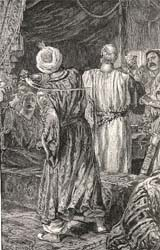

|
|
||||
|
|
Home | Corson Collection | Biography | Works | Image Collection | Recent Publications | Portraits | Correspondence | Forthcoming Events | Links | E-Texts | Contact The Talisman (Tales of the Crusaders)First Edition, First Impression: Tales of the Crusaders. By the Author of "Waverley", "Quentin Durward", &c. In Four Volumes. Vol. I (II-IV). Edinburgh: Printed for Archibald Constable and Co. Edinburgh; And Hurst, Robinson and Co., London, 1825. Composition | Synopsis | Reception | Links Composition
SynopsisThis novel focuses on the Third Crusade which had been triggered by the conquest in 1187 of almost the whole of Palestine, including Jerusalem, by Salah-ed-Din Yusef ibn Ayub or Saladin. The plot revolves around the Crusaders' camp in the Holy Land which is being torn apart by tensions between rival leaders. The most influential, Richard the Lionheart, is ill, which accentuates the divisions among the Christian forces. On a mission far from the camp, the poor Scottish crusader Sir Kenneth, or the Knight of the Leopard, comes across a Saracen emir with whom, after inconclusive combat, he strikes up a friendship. The emir is none other than Saladin himself. He manages to gain access to the Christian camp by disguising himself as a physician sent to Richard the Lionheart, whom he quickly cures with the aid of the talisman of the novel's title. Sir Kenneth is entrusted to guard the banner of England during the night but he is lured from his post by Queen Berengaria, Richard's wife, who has an urgent message for him from Edith Plantagenet with whom Sir Kenneth is enamoured. During his absence the English flag is torn down and his faithful hound wounded. Sir Kenneth is dishonoured and only escapes execution thanks to the emir who agrees to take him as his slave. Saladin treats Kenneth kindly before the knight returns to the camp disguised as a mute attendant to King Richard, whom he saves from assassination. Richard sees through Sir Kenneth's disguise but awards him the chance to find the man who wounded his hound and tore down the banner. As the forces march past the re-erected standard the hound leaps upon Richard's rival, Conrade of Montserrat, and brings him down from his horse. A trial by combat is arranged between Conrade and Sir Kenneth which the Scottish knight wins. Afterwards Sir Kenneth is revealed to be Prince David of Scotland. His royal status thus entitles him to pursue his union with Edith Plantagenet.  ReceptionCharles Mills (1788-1826), who had written a History of the Crusades, took offence at Scott's assertion in his introduction to The Talisman that an Edith Plantagenet had existed. He defied the novelist to produce evidence to support his statement and accused Scott of deliberately misleading his readers. Indeed The Talisman gave rise to much debate amongst the critics as to the use that can be justifiably made of historical facts in fiction. The Quarterly Review commended The Talisman for surpassing grandeur and effect and praised the construction of the story. The Edinburgh Magazine praised characterization, diction and costume but criticism the overuse of Oriental themes. The Examiner asserted that Richard was by far the best character, but that the novel in general was too melodramatic. Criticism from the London Magazine focused upon Scott's descriptions of clothes and furniture which it felt rendered the novel tedious. Richard and Saladin were praised by most readers. More significantly however, The Talisman is perhaps the first novel is English to portray Muslims in a positive light. Links
Last updated: 19-Dec-2011 |
|||